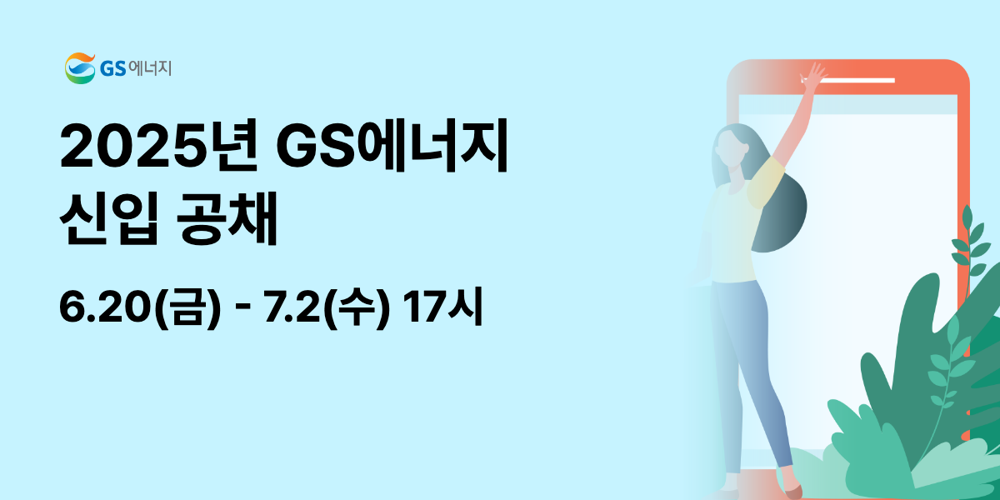

t1014-gs2025 · GS에너지
장부 유형: 배경형(빈 자리 있는 바탕 그림)+오브젝트 느낌 3D·일러스트 · 배경형 가능 · 주인공 39% · 정사각형
AI 판단: illust-grad-bg · 11초 · $0.0329 · 고침 2
하늘색 바탕 위쪽이 넓게 비어 있고 인물과 확성기는 아래쪽에 모여 있어, 아래쪽을 crop해 그림으로 쓰고 하늘색을 연장한 지면에 글자를 올린다. 글자 톤은 밝은 지면에 맞춰 dark로 하고, 로고는 어두운 톤이라 밝은 지면에서 잘 읽힌다.
카카오톡 · 카카오 디스플레이 광고 (PC) — 홍보이미지 1200×600 · 가로형


right·md / 글자 left·center / 배경 AI #C6F3FF→#D9F7FF 녹임 50%
그림을 오른쪽에 두고 왼쪽 하늘색 지면에 글자를 올리며, 하늘색이 자연스럽게 이어지도록 녹인다.
구글 GDN · GDN 고정 배너 580×400 580×400 · 정사각
bottom·lg / 글자 left·top / 배경 AI #C6F3FF→#D9F7FF 녹임 45%
위쪽 하늘에 글자를 두고 아래에 그림을 크게 배치해 균형을 맞춘다.
인스타그램 · 인스타그램 피드 (기본형 1080×1080) 1080×1080 · 정사각
bottom·lg / 글자 left·top / 배경 AI #C6F3FF→#D9F7FF 녹임 45%
위쪽 하늘에 글자를 두고 아래에 그림을 크게 배치해 균형을 맞춘다.
구글 GDN · GDN 고정 배너 300×600 300×600 · 세로형
bottom·lg / 글자 left·top / 배경 AI #C6F3FF→#DDF8FF 녹임 50%
인물 무리를 아래에 두고 위쪽 하늘색 지면에 글자를 놓는다. 하늘 그라데이션을 위로 연장해 빈 느낌을 줄인다.
구글 GDN · GDN 고정 배너 300×1050 300×1050 · 세로 띠
bottom·sm / 글자 center·top / 배경 AI #C6F3FF→#E3F9FF 녹임 60%
세로 띠는 폭이 좁으므로 그림을 아래에 작게 두고 위 전체를 글자 공간으로 쓴다.